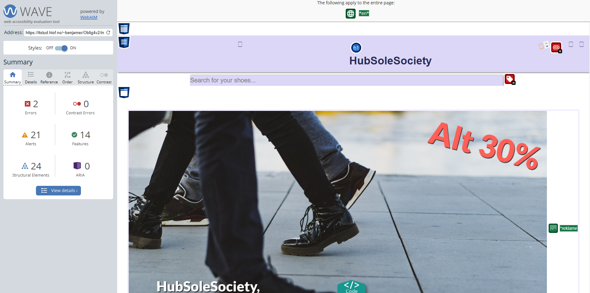
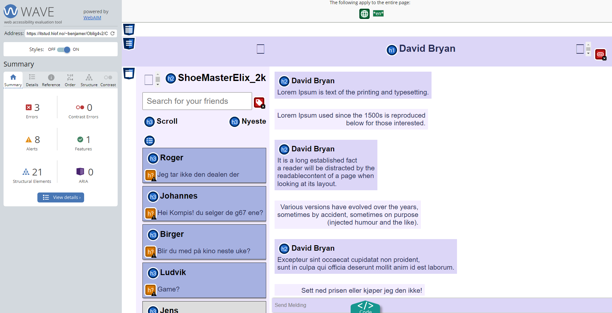

Analyse av Oblig3 oppgave
Nøkkelord undersøkelse
Jeg skal finne visse nøkkelord som er relevante til nettsiden min og jeg har i bruk google trends
-
Shoes
Jeg la Shoes inn i google trends og fant ut at dette var en av de mest brukte ordene som ble brukt.
Jeg valgte å bruke shoes fordi det er det mest brukte og lett søkte ordet for å finne sko rundt i verden.
-
Sneakers
Sneakers er et søkeord som blir brukt til mer spesefike sko. Med å bruke dette ordet får man opp folk som spesefikt leter etter etter en sko type og hvis din nettside kommer opp vil brukeren kanskje prøve ut siden.

-
SneakerHead
Jeg valgte sneakerhead fordi det er veldig relevant til nettsiden jeg lager.
HubSoleSociety handler om å lage et samfunn av "SneakerHeads" som vil snakke om sko og lage grupper der de kan dele meninger om sko, men også selge sko til hverandre.
Jeg sammenligna "SneakerHead" med "Sneaker Head" og det var flere som søkte etter "SneakerHead" enn "Sneaker Head".
-
Lighthouse analyse
SEO Index analyse
Desktop analyse


Mobile Analyse

På desktop fikk jeg en 90 på SEO analysen i motsettning til mobil versjonen som fikk 92 på SEO analysen.
Begge sidene har fått i klage at de mangler meta description.SEO fiks på indexsiden
Etter å ha lagt til Meta description fikk nettsiden på både mobil og dekstop 100% i SEO analysen.
-
SEO chat analyse
Desktop analyse
Mobile analyse

På desktop fikk jeg en SEO analyse på 89 i motsettning til mobil versjonen der SEO analysen ble 91.
Både mobil og dekstop versjonen fikk i klage at de manglet meta descriptionSEO fiks på chatside
Etter å ha fikset på meta description ble både mobil og dekstop 100% i SEO analysen
-
SEO produktside analyse
Desktop analyse
Mobile analyse

På desktop-versjonen mottok jeg en SEO-analyse med en poengsum på 90, mens mobilversjonen oppnådde 92 i SEO-analysen.
Begge versjonene fikk bemerkninger om manglende meta-beskrivelse.SEO fiks på produktside
Etter å ha skrevet inn meta description på produktsiden ble SEO analysen 100%
-
Webaim analyse
Webaim Index analyse
Før fiks
på index siden min fikk jeg 2 errorer, de var missing form label på søkebaren min og en empty link på symbolene mine som ikke syntess på webaim.
Meste parten av erroerene er fra palceholder bildene mine siden de inneholder samme alternative tekst.Etter fiks
Problemene jeg hadde med siden min var at jeg manglet formlabel på søkebaren min rett under menyen, og en av meny ikonene mine var en empty link som jeg måtte fikse.
Disse fiksene gjorde det lettere å bruke nettsiden siden den ikke lenger hadde empty links og skrivebokser som mangelt labels. -
Webaim produkter
Før fiks
På produktsiden fikk jeg også de samme feilene angående headeren min som manglet var to empty linker.
Etter fiks
Problmet var nesten likt som på index siden så jeg hadde oppskriften på å løse "missing empty link" problemet som var på siden.
Etter fiks ble nettsiden mer burker vennlig, med lenker som ikke er empty, som er essentielt for en strukurert nettside. -
Webaim chat
Før fiks
Møtte på 2 missing form labels og en empty link error.
Etter fiks
Problemet jeg møte på var at alle skrive boksene mine mangelt en form label og en av linkene var en empty link.
-
ChatGpt analyse av nettside
Løsninger til Index side
SEO-vurdering
Metabeskrivelse
Metabeskrivelsen er til stede (<"meta name="description" content="Shoes for shoeheads">), men den kunne vært mer detaljert og inneholdt nøkkelord relatert til innholdet på siden.
Lenker og Aria-attributter
Lenketekstene ser informative ut. God bruk av aria-label for tilgjengelighet, spesielt for lenkene til analyse- og chat-sidene.
Semantisk HTML
Bruk av semantiske HTML-elementer som "header", "nav", "main", og "footer" bidrar til god struktur.
Alt-tekster for Bilder
Alt-tekstene for bildene ser ut til å være tilstede og beskrivende, noe som er bra for SEO og tilgjengelighet.
UU-vurdering
Aria-attributter
God bruk av aria-label for å forbedre tilgjengeligheten på lenker.
Fargekontrast
Fargekontrasten ser ut til å være tilstrekkelig for lesbarhet.
Tastaturnavigasjon
Det ser ut til at nettstedet kan navigeres med tastaturet, men det mangler visuell indikasjon på fokuset. Legg til stilregler for å fremheve fokuset.
Brukervennlighet for Skjermlesere
Test nettstedet med skjermlesere for å bekrefte at all relevant informasjon er tilgjengelig.
Unngå Inline-Stil
Flytt stiler til eksterne stilark for bedre vedlikehold og lesbarhet.
JavaScript
Det er en hendelseslytter for et element med klassen "navbar", men denne klassen er ikke definert i HTML-en du har delt. Sørg for at JavaScript-funksjonaliteten fungerer som forventet.
Screenshot av ChatGPT index analyse
-
Løsninger til Chat Side
SEO-vurdering
Metabeskrivelse
Metabeskrivelsen er kort, men den kunne vært mer beskrivende og inneholde flere nøkkelord relatert til innholdet på siden.
Lenker og Aria-attributter
Lenketekstene ser generelt informative ut. God bruk av aria-label for tilgjengelighet, spesielt for lenken til analyse-siden.
Semantisk HTML
Bruk av semantiske HTML-elementer som "header", "nav", "main", og "footer" bidrar til god struktur.
Alt-tekster for bilder
Alt-tekstene for bildene er ikke tilstede. Legg til beskrivende alt-tekster for bedre forståelse for søkemotorer og tilgjengelighet.
UU-vurdering
Aria-attributten
God bruk av aria-label for å forbedre tilgjengeligheten på lenker. Fortsett å implementere dette der det er nødvendig.
Fargekontrast
Fargekontrasten ser ut til å være tilstrekkelig for lesbarhet.
Tastaturnavigasjon
Det ser ut til at nettstedet kan navigeres med tastaturet, men det er ingen visuell indikasjon på fokus. Legg til stilregler for å fremheve fokuset.
Skjermleserbruk
Test nettstedet med skjermlesere for å bekrefte at all relevant informasjon er tilgjengelig.
JavaScript
Det er en hendelseslytter for et element med klassen "navbar", men denne klassen er ikke definert i HTML-en du har delt. Sørg for at JavaScript-funksjonaliteten fungerer som forventet.
Stilark
Det ser ut til å mangle en ekstern stilfil (style.css). Bruk av eksterne stilfiler gjør det lettere å vedlikeholde og organisere koden.
Screenshot av ChatGPT Chatside analyse
-
Løsninger til Produktside
SEO-vurdering
Metabeskrivelse
Metabeskrivelsen er til stede (<"meta name="description" content="Good shoes for a shoehead">), men den kunne vært mer detaljert og inneholdt nøkkelord relatert til produktet eller siden.
Lenker og Aria-attributter
Lenketekstene ser informative ut. God bruk av aria-label for tilgjengelighet, spesielt for lenkene til analyse- og chat-sidene.
Semantisk HTML
Bruk av semantiske HTML-elementer som "header", "nav", "main", og "footer" bidrar til god struktur.
Alt-tekster for Bilder
Alt-tekstene for bildene ser ut til å være tilstede og beskrivende, noe som er bra for SEO og tilgjengelighet.
UU-vurdering
Aria-attributter
God bruk av aria-label for å forbedre tilgjengeligheten på lenker.
Fargekontrast
Fargekontrasten ser ut til å være tilstrekkelig for lesbarhet.
Tastaturnavigasjon
Det ser ut til at nettstedet kan navigeres med tastaturet, men det mangler visuell indikasjon på fokuset. Legg til stilregler for å fremheve fokuset.
Skjermleserbruk
Test nettstedet med skjermlesere for å bekrefte at all relevant informasjon er tilgjengelig.
JavaScript
Det er en hendelseslytter for et element med klassen "navbar", men denne klassen er ikke definert i HTML-en du har delt. Sørg for at JavaScript-funksjonaliteten fungerer som forventet.
Screenshot av ChatGPT produktside analyse
| Analysene | Lighthouse | Webaim | ChatGpt |
|---|---|---|---|
| SEO | Gir generell informasjon. Hjalp med meta description. |
Ingenting, man burde bruke lighthouse i stedet for mer nyaktig hjelp. |
Ufordypende informasjon men hjelpsom. |
| UU | Lite informasjon som ikke viser direkte problemet, noe Webaim gjør. |
Gir veldig god UU informasjon i dybde. Hjalp med å identifisere: Missing labels og empty links. Gir mest nyaktig informasjon av alle de andre hjelpe middlene. |
Ufordypende informasjon der man bare for vite hvor feilen er. SEO er noe Lighthouse gjør bedre |
-
Tilgjengelighet
Skjermleserkompatibilitet
Index side
Skjermleseren leser gjennom hele nettsiden fra topp til bunn, men utelater toppmenyen.
Dette utgjør en betydelig utfordring for personer som er avhengige av skjermlesere, da de ikke får informasjon de trenger om de tilgjengelige alternativene.
Dette er spesielt problematisk fordi de fleste funksjonene som gir tilgang til andre deler av nettsiden, er representert av ikoner i toppmenyen, som ikke blir nevnt.
Dette begrenser brukerens evne til å utforske og dra nytte av full funksjonalitet, og det er avgjørende å rette opp dette for å sikre en mer tilgjengelig opplevelse. -
Produkt side
På produktsiden er det et problem med skjermleseren. Den leser gjennom alt fra øverst til nederst, men hopper dessverre over menyen øverst.
Dette gjør det vanskelig for de som bruker skjermlesere, fordi de går glipp av viktig informasjon i menyen. -
Chat Side
Den starter med å lese brukerens brukernavn, deretter beveger seg nedover gjennom ulike samtaler brukeren har hatt med andre.
Deretter går den gjennom meldingene brukeren har utvekslet med en spesifikk person. Skjermleseren har dessverre vanskeligheter med å lese opp både ringeknappen og brukernavnet til personen vi forsøker å kommunisere med.
Når viktige elementer som ringeknappen og brukernavnet ikke blir riktig lest opp, kan det hindre en fullstendig og effektiv kommunikasjon. -
Tastaturnavigasjon
Index side
Når jeg bruker tastaturnavigasjon, opplever jeg begrensninger i tilgangen til nettstedet.
Jeg kan kun navigere til sidene som har direkte koblinger, mens annet innhold blir oversett eller hoppet over.Produkt side
Under tastaturnavigasjon er jeg kun i stand til å nå sidene jeg har direkte koblinger til, mens andre deler av nettstedet blir oversett.
Dette kan gjøre det vansklig for brukere som trenger skjermleser funksjonen.Chat Side
Under tastaturnavigasjon er det kun mulig for meg å få tilgang til sidene som har direkte koblinger., mens andre deler av nettstedet blir oversett.
Man får bare gått gjennom telefon ikon, vennersøkebar og sendmeldingbar.
-
Skip til hovedinnhold snarvei
Analyse siden
Analyse siden før

Nettsiden manglet en hurtigsnarvei til hovedinnholdet, noe som reduserer brukervennligheten for de som muligens ville ha nytte av det.
Analyse side etter
Etter å ha oppdaget fraværet av en hurtigsnarveiknapp, ble det lagt til for å forbedre brukervennligheten for alle.
-
Index siden
Index side før

På forsiden er det viktig med en hurtigsnarveiknapp siden dette gir første intrykk til en bruker som vil ha nytte for dette,
hvis en brueker som behøver dette legger merke til det så kasnkje gir det et bedre første intrykk til å bruke siden og mer troverdighet til å handle på nettsidenIndex side etter
Etter hurtigsnarveiknapp ble lagt til så vil siden funke bedre for alle spesielt de som har behov for det.
-
Chat siden
Chat side før

Nettsiden manglet en hurtigsnarvei til hovedinnholdet, noe som reduserer brukervennligheten for de som muligens ville ha nytte av det.
Chat side etter
Etter hurtigsnarveiknapp ble lagt til, legger dette til brukervennligheten til nettsiden.
-
Produkt siden
Produkt siden før

Mangler bruker vennlighet på grunn av mangel på hurtigsnarveiknapp
Produkt side etter
Etter å ha lagt til hurtigsnarveiknapp blir dermed bruekr vennligheten sterkere.
-
Koden brukt til alle sidene
Koden før fiks

-
Koden etter fiks

Denne koden ble brukt til alle nettsidene mine for å løse problmet jeg hadde med brukervennlighet for tastaturnavigasjon.
-
Aria-attributter
Brukt på alle nettsidene. (index, chat og produktside)
-
Aira-role